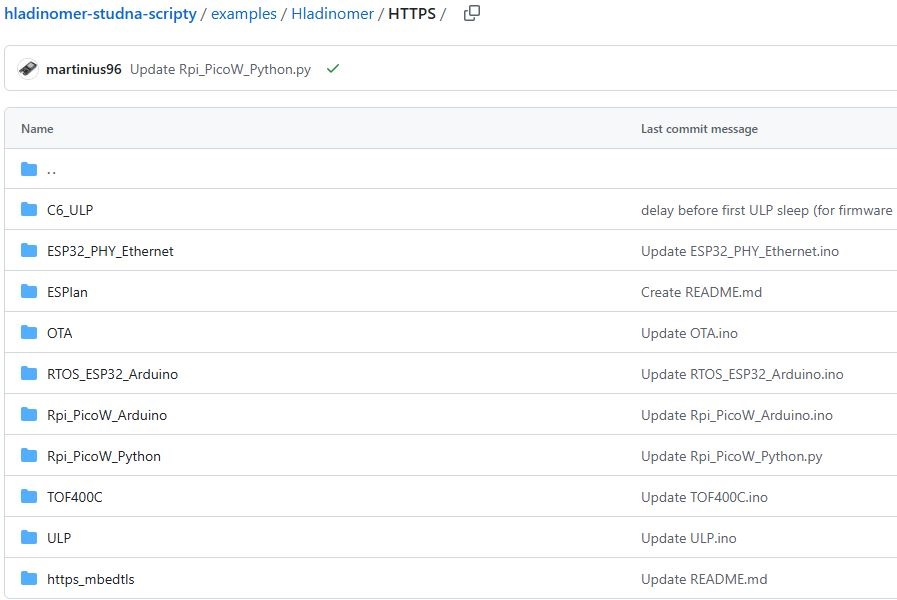

Monitoruj poziom lub wysokość materiałów za pomocą Watmonitor
Dla gospodarstw domowych, przemysłu i entuzjastów IoT
Watmonitor – interfejs webowy miernika poziomu
Watmonitor to scentralizowana aplikacja webowa do wizualizacji poziomu cieczy lub wysokości materiałów sypkich. Zaprojektowana do samodzielnego hostingu (lokalnego). Umożliwia podłączanie węzłów czujników za pośrednictwem API i przechowywanie danych w bazie danych, a także integrację danych z innymi platformami. Dzięki intuicyjnemu interfejsowi można monitorować aktualny poziom i objętość w czasie rzeczywistym, w tym opracowywanie pomiarów (wzrost, spadek) oraz stan połączenia węzła czujnika.
Kluczowe funkcje
- Aktualizacja poziomu w czasie rzeczywistym, status w głównym widoku
- Wizualizacja tabelaryczna kompletnych pomiarów
- Wizualizacja poziomu na wykresach do roku wstecz
- Eksport danych z wykresów do formatów .svg, .png, .csv
- Maksymalna i minimalna wartość poziomu dla poszczególnych okresów
- Obsługa pomiaru poziomu różnicowego i całkowitego
- Responsywna konstrukcja – dostępna na komputerach PC i smartfonach
- Możliwość integracji z innymi systemami za pośrednictwem punktów końcowych JSON
Rozwiązanie jest przeznaczone do monitorowania wody, oleju, paliwa, kleju, biomasy, peletu, nasion, paszy, odpadów, żwiru, piasku, granulatu i innych.
Scenariusze zastosowania
Idealne rozwiązanie do wizualizacji poziomu: studnie, zbiorniki, kontenery IBC, szamba, jeziora, zbiorniki retencyjne. Nadaje się również do wysokości materiałów sypkich w pojemnikach, kontenerach, silosach i na stosach.
Obsługiwane czujniki
Interfejs sieciowy jest uniwersalny – nie rozróżnia, z którego czujnika pobiera dane. Można użyć dowolnego czujnika z własnym oprogramowaniem układowym do pomiaru różnicowego (od góry do powierzchni) lub całkowitego poziomu wody (od dołu do powierzchni). Aby uzyskać gotowe rozwiązanie z czujnikiem przemysłowym, wystarczy ustawić wywołanie zwrotne do API Watmonitor w celu rejestrowania danych, patrz FAQ.
Węzeł czujnika
Wykonuje pomiary i wysyła dane do zdalnego interfejsu Watmonitor. Do szybkiego prototypowania z Watmonitorem dostępne są kody źródłowe dla sprzętu typu „zrób to sam” (open source): ESP32, ESP8266, Arduino, Rpi Pico W. Łączność Wi-Fi/Ethernet z czujnikami ultradźwiękowymi lub laserowymi ToF. Obsługa trybu niskiego poboru mocy, aktualizacje OTA. Arduino Core/ESP-IDF z FreeRTOS. Implementacje eksperymentalne – Bluetooth Low Energy (BLE), LoRa, LoRaWAN.
Funkcje QR / AR
Watmonitor jest kompatybilny z aplikacjami internetowymi, które umożliwiają wizualizację najnowszych danych. Wystarczy zeskanować kod QR telefonem komórkowym. Dane można wyświetlić jako wizualizację statyczną lub w rzeczywistości rozszerzonej (orbitalna scena AR). Inną opcją jest użycie karty NFC (NTAG) lub karty RFID do uruchomienia wizualizacji AR. Wykorzystuje ona punkt końcowy JSON Watmonitora do pobierania danych.

Dostępne
On-premise
Wykresy do pobrania
Open source HW
Responsywny
Wielojęzyczny
White labeling
Wsparcie i informacje zwrotne
Szczegóły

Strona główna (Przegląd)
Główny przegląd aktualnego stanu danych węzła czujnika Watmonitor i łączności
Strona główna Watmonitor wyświetla najnowsze znane dane dotyczące poziomu i objętości wody z aktualizacjami w czasie rzeczywistym. Wyświetla ona trend pomiarów, a także czas rejestracji i stan połączenia węzła czujnika, zapewniając użytkownikom kompleksowy przegląd aktywności czujnika i jego statusu online.

Strony historii i rekordów
Pełna historia danych, rejestrująca wartości minimalne i maksymalne w czasie
Strona Historia w Watmonitorze wyświetla wszystkie pomiary poziomu wody w formacie tabeli z możliwością usunięcia konkretnego rekordu (po zalogowaniu). Strona Rekordy wyświetla maksymalny i minimalny poziom wody zarejestrowany w ciągu ostatnich 24 godzin, 7 dni i 30 dni w formie wykresu wskaźnikowego, co ułatwia wizualizację.

Wykresy liniowe
Przegląd danych dotyczących poziomu wody w różnych przedziałach czasowych, do 1 roku wstecz.
Strona z wykresami w Watmonitorze umożliwia użytkownikom łatwe przeglądanie i analizowanie zmian poziomu wody w czasie. Użytkownicy mogą pobrać cały wykres lub jego fragment i wyeksportować te dane w jednym z dostępnych formatów .csv, .png i .svg w celu dalszej analizy i raportowania (MATLAB, OriginLab, Excel, PowerPoint).
 s metódou pripojenia WiFi alebo PHY Ethernet k rozhraniu Watmonitor cez HTTP alebo HTTPS")
Program ESP32
Automatycznie generowany kod źródłowy dla ESP32 (Arduino IDE)
Strona programu oferuje wstępnie skonfigurowane kody źródłowe dla mikrokontrolera ESP32 dla węzłów czujnikowych z obsługą Wi-Fi i ULP. Możliwe jest użycie czujników ultradźwiękowych (JSN-SR04T, HC-SR04) lub laserowych ToF (VL53L1X) do szybkiej integracji z własną instancją Watmonitor.
Generator automatycznie konfiguruje ścieżkę do wysyłania danych z węzła czujnikowego na podstawie domeny, a także głębokości folderu, w którym znajduje się aplikacja internetowa Watmonitor. Kod źródłowy jest skonfigurowany w oparciu o używany protokół (HTTPS dla bezpiecznego połączenia lub HTTP do testowania, instancja localhost). Kod jest kompatybilny z Arduino Core 3.X.X, co zapewnia szybką i bezproblemową integrację sprzętową.

Schemat okablowania
Schemat okablowania obsługiwanego sprzętu IoT Open Source
Schemat okablowania dostępny na tej stronie jest przeznaczony dla sprzętu IoT Open Source, takiego jak ESP32, ESP8266 i Arduino z ultradźwiękowym czujnikiem odległości. Dostępne są również uproszczone tabele mapowania pinów, aby ułatwić laikom podłączenie sprzętu do mikrokontrolera węzła czujnikowego IoT. Schemat jest również dostępny dla połączeń ESP32 z LAN8720 Ethernet PHY za pośrednictwem interfejsu RMII.

Ustawienia
Opcje ustawiania wymiarów studni i języka
Ta strona umożliwia użytkownikom wprowadzenie proporcji studni/zbiornika (głębokości i średnicy) w celu automatycznego obliczenia całkowitego poziomu wody (jeśli węzeł czujnika wysyła poziom różnicowy) oraz objętości cieczy odpowiadającej danemu poziomowi. Użytkownik może również wybrać język interfejsu internetowego. Dostępne są: angielski, słowacki, niemiecki, rosyjski, francuski i hiszpański, co pozwala na globalne korzystanie z Watmonitora.

Płytka połączeniowa
Szybkie prototypowanie z gotowym sprzętem
Płytka połączeniowa umożliwia korzystanie z gotowych zestawów deweloperskich WiFi, takich jak Lolin32 lub XIAO. Możliwość zasilania z akumulatora litowo-polimerowego i ładowania za pomocą panelu słonecznego 5 V lub złącza USB. Obsługa modułu LoRa RA-02 (433 MHz). 4-pinowy interfejs umożliwia podłączenie czujników ultradźwiękowych HC-SR04 lub JSN-SR04T, laserowych czujników ToF VL53L1X lub VL53L0X, a także własnego czujnika. Sprzęt można lutować bezpośrednio do płytki PCB lub montować w złączach pinowych, co ułatwia wymianę bez konieczności lutowania. Niskie koszty sprzętu.
Galeria


Najczęściej zadawane pytania - FAQ
Poniżej odpowiedzi na najczęściej zadawane pytania dotyczące Watmonitora
Czy potrzebuję hostingu, aby uruchomić Watmonitora na własnym serwerze?
Tak, do uruchomienia Watmonitora potrzebny będzie lokalny lub internetowy hosting. Aby móc uruchamiać skrypty PHP dla Watmonitora, serwer musi mieć zainstalowany pakiet Apache/HTTPD lub NGINX. Watmonitor został przetestowany i działa w PHP w wersjach od 7 do 8.4. Możesz użyć MySQL (zalecane) lub MariaDB jako bazy danych.
Czy konfiguracja aplikacji internetowej dla Watmonitora jest trudna?
Konfiguracja aplikacji internetowej dla Watmonitora jest łatwa dzięki instrukcji w formacie PDF. Ten przewodnik krok po kroku opisuje proces importowania pliku .sql do bazy danych MySQL/MariaDB, konfigurowania pliku connect.php dla połączeń z bazą danych oraz konfigurowania uwierzytelniania HTTP, czyli tokena urządzenia.
Czy Watmonitor automatycznie wygeneruje kod źródłowy dla mojego sprzętu?
Tak, Watmonitor automatycznie wygeneruje kod źródłowy dla ESP32 z Wi-Fi i ULP dla obsługiwanych czujników ultradźwiękowych lub laserowych ToF. Wygenerowany kod źródłowy będzie zawierał wymagany token MCU, ścieżkę (głębokość) do docelowego pliku PHP oraz adres domeny (uwaga: localhost nie zadziała — upewnij się, že używasz dostępnego adresu IP lub nazwy domeny). Certyfikat Root CA (dla połączeń HTTPS) nie będzie edytowany, więc będziesz musiał ręcznie dodać go do kodu źródłowego ESP32. Domyślnie używany jest certyfikat Let's Encrypt Root CA ISRG Root X1.
Czy istnieją inne szkice dla ESP32 i Arduino?
Tak, na GitHubie znajdują się inne szkice, które są kompatybilne z interfejsem Watmonitor. Należą do nich szkice dla Arduino z Ethernetem (seria ENC lub Wiznet), ESP8266, ESP32 i innymi technologiami transmisji, takimi jak LoRaWAN i Sigfox IoT. Dostęp do tych kodów źródłowych można uzyskać, klikając przycisk „Węzeł czujnika – oprogramowanie” u góry tej strony.
Jakie są mutacje językowe treści Watmonitora?
Aplikacja internetowa Watmonitor obsługuje tłumaczenia dla następujących języków: angielski, niemiecki, rosyjski, hiszpański, francuski, polski i słowacki, dzięki czemu jest dostępna globalnie.
Jak zintegrować Watmonitora z innymi systemami?
Watmonitor ma dwa punkty końcowe API JSON – dostępne przez HTTP GET:
• json_output.php – dostarcza najnowsze znane dane (natywnie używane przez skaner QR / wizualizację AR).
• json_output2.php – dostarcza wszystkie zarejestrowane dane z opcją wprowadzania parametrów GET w celu ograniczenia wyników (od–do), wszystkich od lub wszystkich do.
Punkty końcowe umożliwiają integrację z innymi systemami za pomocą automatyzacji Wsparcie:
Node-RED, Ignition SCADA, NetSuite, AWS IoT Core, ThingsBoard, Grafana, ELK Stack, Power BI, Tableau, Home Assistant...
Możliwość rozszerzenia o webhooki do automatyzacji (Zapier, IFTTT, n8n, Microsoft Power Automate).
Jak nawiązywana jest komunikacja między serwerem a węzłem czujnika?
Węzeł czujnika komunikuje się z serwerem internetowym za pośrednictwem protokołu HTTP lub HTTPS. W regularnych odstępach czasu (domyślnie 5 minut) mierzy poziom wody i wysyła go za pomocą żądania POST. Serwer przechowuje dane w bazie danych MySQL, co umożliwia wizualizację poziomu wody za pośrednictwem aplikacji internetowej Watmonitor.
Jak mierzy węzeł czujnika IoT?
Węzeł czujnika IoT mierzy odległość, wykorzystując zasadę Time-of-Flight (ToF). Jeśli używa czujnika ultradźwiękowego, wysyła krótki impuls wyzwalający i mierzy czas powrotu echa. Jeśli używa laserowego czujnika ToF, wysyła impulsy świetlne i oblicza odległość na podstawie czasu dotarcia światła odbitego. Obie metody zapewniają porównywalne pomiary, odpowiednie dla zastosowań IoT.
Jak wygląda wywołanie zwrotne w Watmonitorze?
Aby wysłać dane do Watmonitora, wyślij żądanie HTTP POST do pliku hosta data.php (np. https://hladinomer.eu/data.php) używając portu 80 lub 443.
Dołącz dwa parametry: value (różnica poziomu wody w cm, INT) i token (autoryzacja).
Żądanie musi zawierać nagłówek Content-Type: application/x-www-form-urlencoded.
Pomyślny zapis zwróci odpowiedź HTTP 200 z komunikatem OK.
Czy mogę symulować węzeł czujnika bez fizycznego sprzętu?
Tak, to możliwe! W symulatorze Wokwi dostępne są przykłady umożliwiające przesyłanie danych do interfejsu Watmonitor co 5 minut za pośrednictwem symulowanego węzła czujnika i czujnika ultradźwiękowego HC-SR04 (można ustawić wartość odległości).
• RPi Pico W (MicroPython)
• RPi Pico W (Arduino Core)
• RPi Pico W (Pico SDK C)
• ESP32 (MicroPython)
• ESP32 (rdzeń Arduino)
• ESP32 (ESP-IDF v5.3+, FreeRTOS, xQueue)
